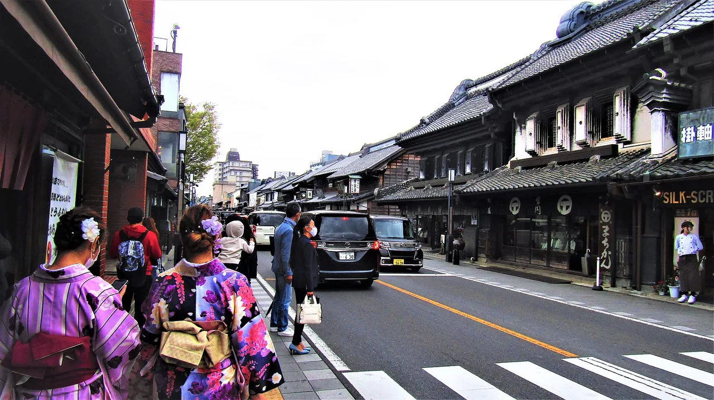

Saitama Travel Guide for Japanese Learners
A little Edo at Kawagoe, plus bonsai and bustling suburbs.

Saitama wraps around the north of Tokyo. Kawagoe ('Little Edo') preserves clay-walled merchant streets and a wooden bell tower, an easy and charming half-day trip.
History & background
Saitama's (埼玉) Kawagoe (川越) thrived as a merchant town supplying Edo; its surviving kurazukuri clay warehouses and wooden Bell Tower (時の鐘) earn it the nickname 'Little Edo' (小江戸).
What to see
- Kawagoe's Kurazukuri warehouse street and Bell Tower
- Hitsujiyama Park's shibazakura (pink moss)
- Omiya Bonsai Village
- Railway Museum in Omiya
Hidden gems
- Kawagoe Castle Ruins offer peaceful grounds and a reconstructed turret with views over the town, less crowded than the main streets below.
- Hikawa Shrine is a grand 1500-year-old sanctuary tucked in residential Kawagoe, famous for matchmaking and serene evening lantern-lit paths.
- Kasatori Wetland near Gyoda hosts migratory birds and seasonal wildflowers, perfect for quiet nature walks away from tourist crowds.
Some links above are affiliate links. We may earn a commission at no extra cost to you. We only list services we'd use ourselves.
What to eat
Kawagoe is known for sweet-potato treats.
Getting there & when to go
Getting there: Kawagoe is ~30–45 min from central Tokyo by train (Tōbu/Seibu/JR).
Best time: April for shibazakura; year-round for Kawagoe's old streets.
When to go — season by season
April paints Hitsujiyama Park (羊山公園) with pink moss phlox below Chichibu's peaks. Kawagoe's old streets are pleasant year-round, and its Hikawa festival lights up autumn.
Local culture
Saitama's clay-walled *kurazukuri* warehouses weren't just decorative—they protected merchant goods from Edo-period fires. Locals still speak proudly of this fireproof legacy, visible in blackened plaster and thick wooden beams that define Kawagoe's streetscape today.
Sweet potato (*satsumaimo*) cultivation thrived in Saitama's sandy northern soil during the Edo period. Vendors still sell *imo-youkan* (sweet potato jelly) and *imo-tart* in Kawagoe stations—a genuine regional crop tradition, not tourist invention.
A suggested visit
A half-day in Kawagoe covers the warehouse street, the Bell Tower, and Candy Alley (菓子屋横丁) with sweet-potato treats — an easy 30–45 minute hop from central Tokyo.
Seasonal tip: Visit Hitsujiyama Park between mid-April and early May for peak shibazakura bloom; arrive before 10 a.m. on weekends to avoid crowding on the hillside.
Local etiquette: In Kawagoe's narrow Kurazukuri street, stay to the left side of the pavement and avoid blocking shop entrances while taking photos—residents and shopkeepers move through constantly.
Kawagoe makes a perfect half-day trip when Tokyo feels too busy.
Some links above are affiliate links. We may earn a commission at no extra cost to you. We only list services we'd use ourselves.
Common questions
Q. How long does it take to visit Kawagoe from Tokyo?
A. 30–45 minutes by train (Tōbu, Seibu, or JR lines). Plan a half-day trip to explore the clay-walled Kurazukuri streets and Bell Tower without rushing.
Q. When is the best time to see Saitama's famous flowers?
A. April is peak season for Hitsujiyama Park's shibazakura (pink moss phlox). However, Kawagoe's historic streets are equally charming year-round, so don't skip it if you visit outside spring.
Q. What should I eat in Saitama?
A. Kawagoe is famous for sweet-potato treats—try them at local shops along the old merchant streets. They're perfect souvenirs and reflect the region's traditional food culture.